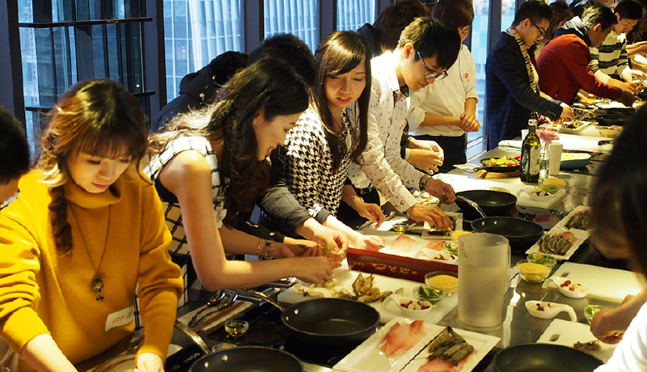
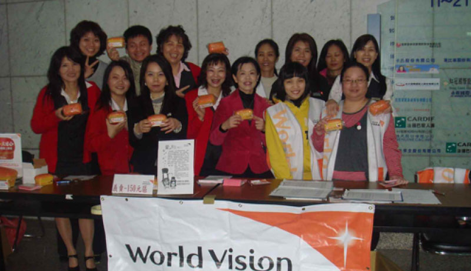
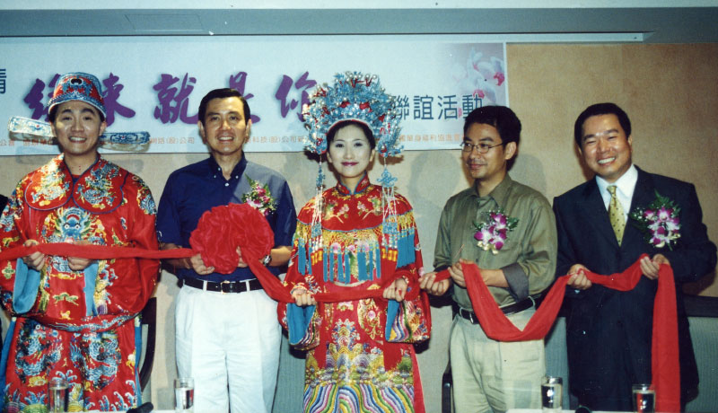

春天大事紀
快來看看
一定要加入春天會館的七大理由
2018-2019
2019
2019
-
06/18 大事紀
新竹會館擴大服務搬遷
-
04/13 委辦活動
緣來愛在潭子，聯誼交友活動
春天會館、好好玩旅行社與潭子區戶政事務所共同舉辦
-
03/25
約會專家跨平台交友正式上線
約會專家與春天會館、DateMeNow、好好玩旅行社…等眾多品牌攜手合作打造一個全台首創虛實整合的跨平台交友服務。
2009-2017
2017
2016
-
03/26 特別企劃
春天會館與妞新聞 「初LOVE聯誼派對」
遴選20 vs. 20位優質男女於ATT 4 FUN「FooShion SKY FESTIVAL」一起洗手做羹湯，進行美味關係的料理體驗。
-
02/18 特別企劃
春天會館與波波黛莉
12星座男生：遇到喜歡女生的表現

2006-2013
2013
2006
-
11/11
春天會館與1111人力銀行合辦單身派對
-
06/14 大事紀
中華民國單身福利協進會正式更名為春天會館
為服務廣大單身朋友，因此正式更名為春天會館。
春天會館與戴晨志博士 成立戴博士魅力教室
與戴晨志博士合作成立「戴博士魅力教室」，秉持「關懷單身、創造魅力、增進友誼」之宗旨，為更多單身朋友量身打造系列課程。
2008
-
12/22
春天會館與台北教師會
單身聖誕戶外一日遊活動，有趣好玩笑聲滿滿。
2009
-
07/26 公益活動
春天會館與世界展望會
共同參與世界展望會發起的「麵包有愛.飢餓不再」義賣園遊會
-
01/20 公益活動
公益捐款 - 私立惠明盲校
發揮愛心、善心，讓弱勢者感受到社會的溫暖，每年捐款持續至今。

2010
-
10/31
單身戀愛PARTY 萬聖節戀愛派對Live Band現場演唱
聖誕花海星空夜 聖誕節百人特別活動
-
04/01
愚人節驚囍 活動
戲院包場助會員求婚Yes！
2011
-
08/06
百年七夕~圍城問情大會
1989-2004
2004
1989
1989
-
10/03
成立中華民國單身福利協進會
秉持著「關懷單身、協助成長、增進友誼」宗旨。在台灣設有6個據點，台北、桃園、新竹、台中、台南、高雄。
1997
-
10/05
年度提昇品質研討會
六會館教育訓練
2000
-
07/01
北市心、竹科情 單身活動
竹科金童驅車前往台北市政府提親…進行超級任務，共渡美好時光。
-
06/24
北市心、竹科情 活動記者會
特別邀請台北市長馬英九、旺宏電子總經理吳敏求代表，舉行牽紅線儀式，締結良緣。
2002
-
08/16
愛在七夕.星光party
邀請高雄縣楊縣長和縣長夫人擔任月下老人，120位單身男女共譜良緣。
-
07/13、07/20
五星貴族之旅-情定大飯店 首次開辦
高雄金典、台中福華展開，全省共計420餘位單身男女
-
05/08
海外旅遊系列二「雲海戀豪華浪漫遊」首航出發
五天四夜驚喜、創意連連，三立新聞隨團採訪。
-
03/17
戶外一日遊沙窯樂翻天
共計80位單身男女一同推沙窯、玩水球、打水仗，共渡愉快假期。
-
02/07 大事紀
好好玩旅行社 成立
專門承辦聯誼活動服務廣大單身朋友。



{kind=link}
{kind=link}
{kind=link}
{kind=link}
{kind=link}
{kind=link}
{kind=link}
{kind=link}
{kind=link}
{kind=link}
{kind=link}
{kind=link}
{kind=link}
{kind=link}
{kind=link}